| europa | asia | africa | oceania | america |
|---|---|---|---|---|
| alemania | japon | sudafrica | australia | mexico |
| francia | india | nigeria | nueva zelanda | brasil |
| españa | corea del sur | kenia | fiyi | honduras |
| inglaterra | china | marruecos | isla salomon | peru |
| holanda | indonesia | ghana | samoa | estados unidos |
Alemania es un país de Europa occidental con un paisaje de bosques, ríos, cadenas montañosas y playas en el mar del Norte

Francia, en Europa Occidental, abarca ciudades medievales, villas alpinas y playas mediterráneas. París, su capital, es famosa por sus firmas de alta costura, los museos de arte clásico, como el Louvre, y monumentos como la Torre Eiffel.

España, país de la península ibérica de Europa, incluye 17 regiones autónomas con diversas características geográficas y culturales
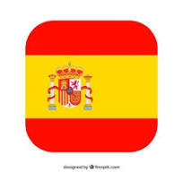Inglaterra, la cuna de Shakespeare y The Beatles, es un país de las Islas Británicas que limita con Escocia y Gales.
Los Países Bajos son un país del noroeste europeo conocido por su paisaje plano de canales, campos de tulipanes, molinos y ciclovías

Japón es una nación insular del océano Pacífico con densas ciudades, palacios imperiales, parques nacionales montañosos y miles de santuarios y templos.
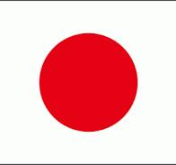La India es un vasto país de Asia del Sur con un terreno diverso que abarca desde las cumbres del Himalaya hasta la costa del océano Índico
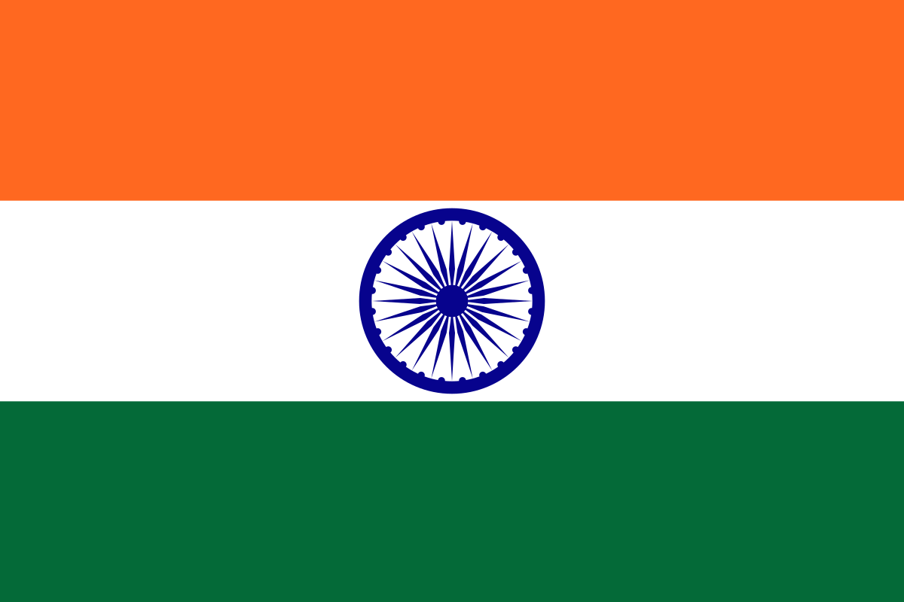La República de Corea, comúnmente Corea del Sur es un Estado soberano de Asia Oriental, ubicado en la parte sur de la península de Corea. Limita al norte con Corea del Norte, con la cual integró un solo país hasta 1945.

China es una nación muy poblada de Asia Oriental cuyos vastos paisajes abarcan praderas, desiertos, montañas, lagos, ríos y más de 14,000 km de costa.

Indonesia, un país del Sudeste Asiático compuesto de miles de islas volcánicas, es hogar de cientos de grupos étnicos que hablan varios idiomas distintos.

Sudáfrica es un país del extremo más meridional del continente africano que se caracteriza por sus numerosos ecosistemas distintos.
Nigeria, oficialmente República Federal de Nigeria, es un país de África occidental, que limita con Níger al norte, con Chad en el nordeste, con Camerún en el este y con Benín en el oeste.
nigeria
Kenia es un país de África Oriental con una costa en el océano Índico. Su territorio abarca sabana, terrenos en lagos, el espectacular Gran Valle del Rift y zonas montañosas altas
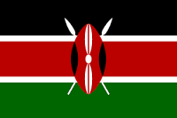Marruecos es un país de África del Norte que limita con el océano Atlántico y el mar Mediterráneo, y se distingue por las influencias culturales bereberes, árabes y europeas.
marruecos 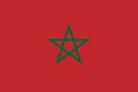Ghana es un país del golfo de Guinea en África Occidental, famoso por su diversa fauna, sus fuertes antiguos y las playas aisladas, como las de Busua
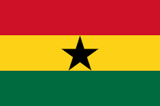
Australia es un país rodeado por los océanos Índico y Pacífico. Sus ciudades principales (Sídney, Brisbane, Melbourne, Perth y Adelaida) son costeras.
Nueva Zelanda es un país en el suroeste del océano Pacífico, que comprende dos islas principales, ambas marcadas por los volcanes y la glaciación

Fiyi, un país del Pacífico Sur, es un archipiélago de más de 300 islas. Es famoso por sus paisajes escabrosos, las playas bordeadas de palmeras y los arrecifes de coral con lagunas de aguas cristalinas.
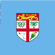
Las Islas Salomón son un país insular independiente situado en Oceanía, en la Melanesia tradicional. Forma parte de la Mancomunidad de Naciones.
ISLA SALOMON
Samoa es un país que abarca el grupo más occidental del archipiélago de Samoa, en la Polinesia. Muchas de sus islas tienen playas bordeadas de arrecifes e interiores escabrosos cubiertos de bosques tropicales con desfiladeros y cascadas.
ISLA SALOMONMéxico es un país entre los Estados Unidos y América Central, conocido por las playas en el Pacífico y el golfo de México, y su diverso paisaje de montañas, desiertos y selvas.
MEXICO 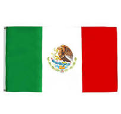Brasil es un vasto país de Sudamérica que se extiende desde la Cuenca del Amazonas en el norte hasta los viñedos y las enormes cataratas del Iguazú en el sur.
BRASIL 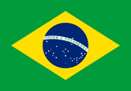Honduras es un país de América Central con costas en el mar Caribe al norte y en el océano Pacífico al sur.
HONDURAS 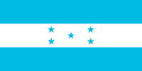Perú es un país de Sudamérica que abarca una sección del bosque del Amazonas y Machu Picchu, una antigua ciudad inca en las alturas de los Andes.
PERU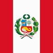
Estados Unidos es un país de 50 estados que ocupa una extensa franja de América del Norte, con Alaska en el noroeste y Hawái que extiende la presencia del país en el océano Pacífico.
ESTADOS UNIDOS